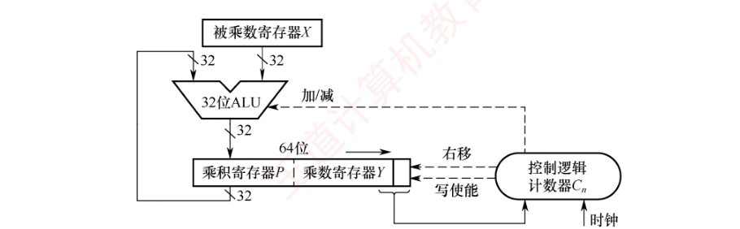

第2章 习题精选
本页共 32 题：选择题 25 道（第 1～8 题出自做题本 2.1 数制与编码，第 9～17 题出自 2.2 运算方法和运算电路，第 18～25 题出自 2.3 浮点数的表示与运算），综合题 7 道（做题本第 2 章综合题共 9 题，其中 2.2 的 4 题全部收录、2.3 收录 3 题；做题本未编入原码/补码一位乘与除法的手算步骤题，乘除运算电路考点以第 29 题及配图为准）。题干【 】内为做题本出处；选择题答案均已与《选择题【答案速查】》网格逐题核对。
一、选择题（第1～25题）
第1题【2.1·P29】若十进制数为 137.5，则其八进制数为（ ）
答案与解析
答案：B
① 整数部分除 8 取余：137 = 128+8+1 = 1000 1001B，按 3 位二进制一组划分：010 | 001 | 001 → 211Q（十进制验算：\(2\times64+1\times8+1 = 137\) ✓）。
② 小数部分乘 8 取整：\(0.5\times8 = 4.0\) → 取 4 → 0.4Q。
故 \(137.5 = 211.4Q\)，选 B。D 是二进制形式且数值不符（1011111.101B = 127.625）；A、C 的整数部分都不是 137。
第2题【2.1·P30】一个 16 位无符号二进制数的表示范围是（ ）
答案与解析
答案：B
n 位无符号数的范围为 \(0 \sim 2^n-1\)，16 位时为 \(0 \sim 2^{16}-1 = 65535\)，选 B。C 是“n+1 位补码”的范围（−32768～32767 对应 16 位补码），A、D 把上界多算了一位（216 需 17 位才能表示）。
第3题【2.1·P30】若 \([X]_补 = 1.1101010\)，则 \([X]_原 =\)（ ）
答案与解析
答案：B
符号位为 1 → X 是负数，负数由补码求原码：数值位取反、末位加 1（符号位不变）：
1.1101010 → 数值位 1101010 → 取反 0010101 → 加 1 → 0010110，故 \([X]_原 = 1.0010110\)，选 B。
验算：\(X = -(0.0010110)_2 = -0.171875\)，而 \([X]_补 = 2 + X = 1.828125 = 1.1101010_2\) ✓。A 忘了加 1，C、D 符号位错误。
第4题【2.1·P30】若定点整数为 64 位，含 1 位符号位，则采用补码表示的绝对值最大的负数为（ ）
答案与解析
答案：C
64 位含 1 位符号位 → 数值部分 63 位。补码整数的范围为 \(-2^{63} \sim 2^{63}-1\)，绝对值最大的负数即下界 \(-2^{63}\)（机器数 1000…0），选 C。D 是原码/反码的下界；补码比原码/反码多表示一个最小负数，这正是“0 表示唯一”换来的代价与收益。
第5题【2.1·P31】假定一个十进制数为 −66，按补码形式存放在一个 8 位寄存器中，该寄存器的内容用十六进制表示为（ ）
答案与解析
答案：B
① \([+66]_补\)：\(66 = 64+2 = 0100\ 0010B = 42H\)；
② 负数补码：连同符号位取反加 1：0100 0010 → 1011 1101 → +1 → 1011 1110。
\([−66]_补 = 1011\ 1110B = BEH\)，选 B。验算：BEH = 190，\(190 − 256 = −66\) ✓。D 是 +66；C 的 BDH = −67（取反后忘 +1 的典型错误）；A 的 C2H = −62。
第6题【2.1·P31】16 位补码 0x8FA0 扩展为 32 位应该是（ ）
答案与解析
答案：B
0x8FA0 = 1000 1111 1010 0000B，最高位（符号位）为 1 → 是负数。补码整数扩展位数时做符号扩展：新增的 16 位全部补符号位 1，低 16 位保持不变：
1111 1111 1111 1111 1000 1111 1010 0000 = 0xFFFF 8FA0，选 B。
A 是零扩展，只适用于无符号数；C 把低 16 位的 8FA0 也改动了；D 无此规则。验算：扩展前后真值都应为 \(−0x7060 = −28768\)（0x8FA0 = 36768，36768−65536 = −28768；0xFFFF8FA0 = 4294938528，4294938528−232 = −28768 ✓）。
第7题【2.1·P31·2012 统考真题】假定编译器规定 int 型和 short 型长度分别为 32 位和 16 位，执行下列 C 语言语句：
unsigned short x=65530;
unsigned int y=x;得到 y 的机器数为（ ）
答案与解析
答案：B
x 是 unsigned short：\(65530 = 0xFFFA\)。短无符号数赋给更长的 unsigned int 时做零扩展（高位补 0）：\(y = 0x0000\ FFFA = 65530\)，数值不变，选 B。D（符号扩展，全补 1）是 x 为 short（有符号 −6）时的结果，是本题最大陷阱。
第8题【2.1·P32·2025 统考真题】在 32 位计算机上执行下列 C 语言代码段后，ui 的值是（ ）
short si=-32767;
unsigned int ui=si;答案与解析
答案：D
① \([si]_补\)（16 位）：\(32767 = 0111\ 1111\ 1111\ 1111B\)，故 \([−32767]_补 = 1000\ 0000\ 0000\ 0001B = 8001H\)。
② 有符号短整型赋给 32 位时先符号扩展到 32 位：FFFF 8001H。
③ 按 unsigned int 解释：\(ui = 2^{32} − 32767 = 2^{32} − (2^{15}−1) = 2^{32} − 2^{15} + 1\)，选 D。
C 的错误在于把 32767 当成 \(2^{15}\)（实际是 \(2^{15}−1\)）。
第9题【2.2·P48】补码定点整数 0101 0101 算术左移两位后的值为（ ）
答案与解析
答案：B
算术左移的操作规则：各位依次左移，低位补 0，移出的高位丢弃。左移两位：
0101 0101 → 0101 0100（移出高两位"01"，末尾补两个 0），选 B。
说明：若按真值看，+85 左移本应伴随溢出（85×2 超出 8 位补码上限），本题考查的是“左移低位补 0”这一移位操作本身，四个选项中只有 B 符合该过程。对照第10题（右移、符号位复制）一起记忆。
第10题【2.2·P49】补码定点整数 1001 0101 右移一位后的值为（ ）
答案与解析
答案：D
补码的算术右移：符号位保持不变，并将符号位复制进最高数值位（相当于除以 2 向更小方向取整）。
1001 0101 → 1100 1010：原数 1001 0101 = −107，右移后 1100 1010 = −54 = −107/2 取整（向 −∞ 取整）✓，选 D。A、B 是逻辑右移（补 0）的结果，会改变负数的符号；C 只在最高位补了 0，不是算术右移。
第11题【2.2·P49】判断加减法溢出时，可采用判断进位的方式，若符号位的进位为 \(C_0\)，最高数值位的进位为 \(C_1\)，则产生溢出的条件是（ ）
I. \(C_0\) 产生进位 II. \(C_1\) 产生进位 III. \(C_0\)、\(C_1\) 都产生进位 IV. \(C_0\)、\(C_1\) 都不产生进位 V. \(C_0\) 产生进位，\(C_1\) 不产生进位 VI. \(C_0\) 不产生进位，\(C_1\) 产生进位
答案与解析
答案：D
单符号位补码加减法中，溢出标志 \(OF = C_0 \oplus C_1\)：两个进位相同（都有 III / 都没有 IV）说明结果未越界；只有一个有进位（V 或 VI）说明数值部分向符号位的进位与符号位自身的进位不一致，结果越界，即溢出。故溢出条件为 V 和 VI，选 D。等价表述：正数相加得负、或负数相加得正时溢出。
第12题【2.2·P50】某计算机字长为 8 位，CPU 中有一个 8 位加法器。已知无符号数 \(x = 69\)，\(y = 38\)，如果在该加法器中计算 \(x-y\)，则加法器的两个输入端信息和输入的低位进位信息分别为（ ）
答案与解析
答案：B
减法在加法器中转为加法：\(x-y = x + [\lnot y] + 1\)（即先按位取反，再用低位进位补 1）。
① \([x] = 69 = 0100\ 0101B\)；② \([y] = 38 = 0010\ 0110B\)；③ \(\lnot[y] = 1101\ 1001B\)；④ 低位进位 \(C_{in} = 1\)（完成“取反加 1”）。
故输入为 0100 0101、1101 1001、进位 1，选 B。C/D 的 1101 1010 已是完整的 \([−38]_补\)，数学上与 B 等价，但教材规定的减法电路统一按“取反 + 低位进位 1”实现，故标准答案取 B。验算：\(0100\ 0101 + 1101\ 1001 + 1 = 0001\ 1111 = 31 = 69-38\) ✓。
第13题【2.2·P50】某计算机中有一个 8 位加法器，有符号整数 x 和 y 的机器数用补码表示，\([x]_补 = F5H\)，\([y]_补 = 7EH\)，如果在该加法器中计算 \(x-y\)，则加法器的低位进位输入信息和运算后的溢出标志 OF 分别是（ ）
答案与解析
答案：A
① 低位进位：减法实现为 \(x + \lnot[y]_补 + 1\) → 低位进位 = 1。
② \([y]_补 = 7EH = 0111\ 1110B\)，取反得 \(1000\ 0001B\)；逐位相加：
1111 0101 (x=−11) + 1000 0001 + 1 = 0111 0111 (mod 256)
③ 真值：\(x-y = −11 − 126 = −137\)，超出 8 位补码范围 \([-128, 127]\) → 溢出，OF = 1（机器数 0111 0111 = +119 显然错误；进位判别：\(C_0 = 1\)，\(C_1 = 0\)，\(OF = C_0 \oplus C_1 = 1\)）。故为“1、1”，选 A。
第14题【2.2·P50】某 8 位计算机中，x 和 y 是两个有符号整数，用补码表示，\([x]_补 = 44H\)，\([y]_补 = DCH\)，则 \(x/2 + 2y\) 的机器数及相应的溢出标志 OF 分别是（ ）
答案与解析
答案：C
① \(x = 44H = 0100\ 0100B = 68\)；\(y = DCH = 1101\ 1100B\)，取反加一得真值 \(-36\)。
② \(x/2\)：算术右移 1 位：0100 0100 → 0010 0010 = 22H（= 34）。
③ \(2y\)：算术左移 1 位：1101 1100 → 1011 1000 = B8H（= −72）。
④ 相加：0010 0010 + 1011 1000 = 1101 1010 = DAH；真值 \(34 + (−72) = −38\)，在 \([-128,127]\) 内 → OF = 0（负数加负数得负，符号一致）。
故机器数 DAH、OF = 0，选 C。验算：DAH = 218，218−256 = −38 ✓。
第15题【2.2·P51·2010 统考真题】假定有四个整数用 8 位补码分别表示：\(r_1 =\)FEH、\(r_2 =\)F2H、\(r_3 =\)90H、\(r_4 =\)F8H。若将运算结果存放在一个 8 位寄存器中，则下列运算会发生溢出的是（ ）
答案与解析
答案：B
先求各补码的真值：\(r_1 = FEH = -2\)，\(r_2 = F2H = -14\)，\(r_3 = 90H = -112\)，\(r_4 = F8H = -8\)。
| 运算 | 真值 | 是否在 [−128, 127] 内 |
|---|---|---|
| A. \(r_1\times r_2\) | \((-2)\times(-14) = 28\) | 是，不溢出 |
| B. \(r_2\times r_3\) | \((-14)\times(-112) = 1568\) | 否，溢出 |
| C. \(r_1\times r_4\) | \((-2)\times(-8) = 16\) | 是，不溢出 |
| D. \(r_2\times r_4\) | \((-14)\times(-8) = 112\) | 是，不溢出 |
故选 B。注意两个负数相乘结果为正，正数上界只有 127，最容易溢出。
第16题【2.2·P51·2014 统考真题】若 \(x = 103\)，\(y = -25\)，则下列表达式采用 8 位定点补码运算实现时，会发生溢出的是（ ）
答案与解析
答案：C
8 位补码表示范围为 \([-128, 127]\)，逐项求真值：
① \(x+y = 103-25 = 78\) ✓；② \(-x+y = -103-25 = -128\)，恰好等于补码可表示的最小值，不溢出；③ \(x-y = 103-(-25) = 128 > 127\) → 溢出；④ \(-x-y = -103+25 = -78\) ✓。故选 C。
机器层面：计算 \(x-y\) 时 \([x]_补 = 0110\ 0111\)，\([y]_补 = 1110\ 0111\)，\([-y]_补 = 0001\ 1001\)，相加得 0110 0111 + 0001 1001 = 1000 0000，两正数相加得“负”（双符号位 10），OF = 1。
第17题【2.2·P52·2024 统考真题】下列关于整数乘法运算的叙述中，错误的是（ ）
答案与解析
答案：D
D 错误（本题选错误项）：两个变量相乘完全可以用“移位 + 加法”指令的循环（软件乘法）实现——每轮判断乘数末位决定是否加被乘数，再右移一位，循环 n 轮，编译器或子程序都可以这样做。
A 正确：阵列乘法器是全组合逻辑，与-加阵列一拍即可出结果；B 正确：ALU+移位器的硬件乘法需 n 轮“加/减 + 右移”，无法一拍完成；C 正确：常量乘法（如 ×10 = (x<<3)+(x<<1)）可编译为移位与加/减指令。
第18题【2.3·P67】假定采用 IEEE 754 标准中的单精度浮点数格式表示一个数为 4510 0000H，则该数的值是（ ）
答案与解析
答案：B
4510 0000H = 0100 0101 0001 0000 0000 0000 0000 0000B，按格式切分：
| 数符 | 阶码（8 位） | 尾数（23 位） |
|---|---|---|
| 0 | 1000 1010 | 001 0000 0000 0000 0000 0000 |
① 阶码真值：\(E = 1000\ 1010B - 0111\ 1111B = 138 - 127 = 11\)；
② 规格化尾数（含隐含的 1）：\(M = 1.001B = 1 + 0.125 = 1.125\)。
故值 = \(+1.125\times2^{11}\)，选 B。注意 IEEE 754 的隐含 1 属于规格化尾数，不能写成 0.125×211。
第19题【2.3·P68】在按字节编址的 32 位计算机中，按边界对齐方式为以下结构型变量 x 分配存储空间：
struct cont_info{
char id;
unsigned post;
char phone;
}x;若 x 的首地址为 0x8049820，则成员变量 phone 的起始地址为（ ）
答案与解析
答案：A
边界对齐规则：每个成员的起始地址必须是自身长度（对齐要求）的整数倍。
① id（char，1 字节）：占用 0x8049820；
② post（unsigned，4 字节）：下一个可用地址 0x8049821 不是 4 的倍数，填充 3 字节 → 从 0x8049824 开始，占 0x8049824～0x8049827；
③ phone（char，1 字节）：紧随其后 → 0x8049828。
整个结构体总大小还要补齐为最长成员（4 字节）的整数倍，共 12 字节。故 phone 地址为 0x8049828，选 A。
第20题【2.3·P69·2009 统考真题】浮点数加、减运算过程一般包括对阶、尾数运算、规格化、舍入和判断溢出等步骤。设浮点数的阶码和尾数均采用补码表示，且位数分别为 5 位和 7 位（均含 2 位符号位）。若有两个数 \(X = 2^7\times29/32\) 和 \(Y = 2^5\times5/8\)，则用浮点加法计算 \(X+Y\) 的最终结果是（ ）
答案与解析
答案：D
① 初始表示：\(X\)：阶码 \(7 = 00\,111\)（双符号位补码，5 位），尾数 \(29/32 = 00.11101\)；\(Y\)：阶码 \(5 = 00\,101\)，尾数 \(5/8 = 00.10100\)。
② 对阶（小阶向大阶）：\(\Delta E = 7-5 = 2\)，\(Y\) 的阶码加 2 变为 00111，尾数右移 2 位：00.10100 → 00.00101（移出的两位为 0，无精度损失）。
③ 尾数相加：00.11101 + 00.00101 = 01.00010，双符号位为 01 → 尾数出现“溢出”形态，需右规（不是真正溢出）。
④ 右规：尾数右移 1 位得 00.10001，阶码加 1：\(7+1 = 8\)，即阶码 = 01 000 形态的 8。
⑤ 判溢出：阶码共 5 位含 2 位符号位，数值部分只剩 3 位，补码表示范围为 \(-8 \sim +7\)；此时阶码真值为 8，超出范围 → 阶码上溢，结果发生溢出，选 D。
真值验证：\(X = 116\)，\(Y = 20\)，\(X+Y = 136\)；该格式可表示的最大正数为 \(0.11111\times2^7 = 124 < 136\)，确实放不下。C 选项（阶码 01000、尾数 0010001，值 = 136）正是“忘判阶码溢出”的陷阱。
第21题【2.3·P70·2013 统考真题】某数采用 IEEE 754 单精度浮点数格式表示为 C640 0000H，则该数的值是（ ）
答案与解析
答案：A
C640 0000H = 1100 0110 0100 0000 0000 0000 0000 0000B：
① 数符 = 1 → 负数；② 阶码 = 1000 1100 = 140 → \(E = 140 - 127 = 13\)；③ 尾数 = 100 0000 …0，规格化尾数（含隐含 1）\(M = 1.1B = 1.5\)。
值 = \(-1.5\times2^{13}\)，选 A。C/D 的错误是把隐含的 1 丢掉（只剩 0.5）。
第22题【2.3·P71·2018 统考真题】IEEE 754 单精度浮点格式表示的数中，最小的规格化正数是（ ）
答案与解析
答案：A
规格化数要求阶码字段不为全 0（也不为全 1）：最小阶码字段为 0000 0001，对应真阶 \(E = 1-127 = -126\)；此时尾数取最小（隐含 1，小数部分全 0），即 \(1.0\)。故最小规格化正数 = \(1.0\times2^{-126}\)，选 A。
D 的 \(2^{-149} = 1.0\times2^{-126}\times2^{-23}\) 是最小非规格化正数（阶码全 0，尾数最低位为 1），规格化数不含它。
第23题【2.3·P71·2022 统考真题】−0.4375 的 IEEE 754 单精度浮点数表示为（ ）
答案与解析
答案：A
① \(0.4375 = 0.0111B\)（\(0.25+0.125+0.0625\)）→ 规格化：\(1.11\times2^{-2}\)（小数点右移 2 位，真阶 = −2）。
② 阶码 = 偏置 + 真阶 = \(127 + (-2) = 125 = 0111\ 1101B\)；
③ 数符 = 1（负数），尾数字段 = 110 0000 0000 0000 0000 0000；
④ 拼接：1 01111101 11000000000000000000000 → 每 4 位一组：1011 1110 1110 0000 0000 0000 0000 0000 = BEE0 0000H，选 A。
第24题【2.3·P72·2023 统考真题】已知 float 型变量用 IEEE 754 单精度浮点数格式表示。若 float 型变量 x 的机器数为 8020 0000H，则 x 的值是（ ）
答案与解析
答案：A
8020 0000H = 1000 0000 0010 0000 0000 0000 0000 0000B：
① 数符 = 1；② 阶码字段 = 0000 0000（全 0）→ 非规格化数，隐含位为 0，值 = \((-1)^s\times0.M\times2^{-126}\)；③ 尾数字段 \(M = 010\ 0000\,;\dots0 = 0.01B = 0.25\)。
故 \(x = -0.25\times2^{-126} = -2^{-2}\times2^{-126} = -2^{-128}\)，选 A。D 错：NaN 要求阶码全 1。
第25题【2.3·P72·2025 统考真题】某 32 位计算机按字节编址，采用小端方式存放数据，编译器按边界对齐方式为下列 C 语言结构型数组变量 employee 分配存储空间。
struct record{
int id;
char name[10];
int salary;
} employee[200];若 employee 的首地址为 0000 A0B0H，employee[1].id 的机器数为 1234 5678H，则该机器数中的 56H 所在存储单元的地址是（ ）
答案与解析
答案：C
① 单个结构体大小：id（4B）+ name（10B）+ 填充（2B，使 salary 4 字节对齐）+ salary（4B）= 20B，且 20 已是 4 的倍数。
② employee[1] 首地址 = A0B0H + 14H（20 的十六进制）= 0000 A0C4H，其 id 占 A0C4H～A0C7H。
③ 小端方式：低位字节存低地址：A0C4H 存 78H、A0C5H 存 56H、A0C6H 存 34H、A0C7H 存 12H。
故 56H 所在单元地址为 0000 A0C5H，选 C。
二、综合题（第26～32题）
第26题【2.2·P52】已知 32 位寄存器 R1 中存放的变量 x 的机器码为 8000 0004H，unsigned int 型的乘除法采用逻辑移位操作，int 型的乘除法采用算术移位操作，请问：
- 当 x 是 unsigned int 型时，x 的真值是多少？x/2 存放在 R1 中的机器码是什么？x/2 的真值是多少？2x 存放在 R1 中的机器码是什么？2x 的真值是多少？
- 当 x 是 int 型时，x 的真值是多少？x/2 存放在 R1 中的机器码是什么？x/2 的真值是多少？2x 存放在 R1 中的机器码是什么？2x 的真值是多少？
答案与解析
-
① \(x = 8000\ 0004H = 2^{31} + 4 = 2\,147\,483\,652\)。
② x/2 用逻辑右移（高位补 0）：
1000 0000 …0000 0100 → 0100 0000 …0000 0010 = 4000 0002H，真值 \(= 2^{30}+2 = 1\,073\,741\,826\)。③ 2x 用逻辑左移（低位补 0）：
1000 0000 …0000 0100 → 0000 0000 …0000 1000 = 0000 0008H，机器数按无符号解释真值为 8。真实值 \(2x = 4\,294\,967\,304 > 2^{32}-1\)，最高位的 1 已被移出丢弃（无符号乘法溢出），8 只是截断结果。 -
① 最高位为 1 → 负数：\(x = -(2^{31}-4) = -2\,147\,483\,644\)（求真值：连同符号取反加一得
7FFF FFFCH）。② x/2 用算术右移（高位补符号位 1）：
1000 …0100 → 1100 …0010 = C000 0002H，真值 \(= -(2^{30}-2) = -1\,073\,741\,822\)（C000 0002H取反加一得3FFF FFFEH）。③ 2x：补码算术左移与逻辑左移相同（低位补 0）：
→ 0000 0008H，按补码解释真值为 8；真实值 \(2x = -4\,294\,967\,288\) 超出 int 范围发生溢出，8 只是移位后的机器数。
第27题【2.2·P52】假设有两个整数 \(x = -68\)，\(y = -80\)，采用补码形式（含 1 位符号位）表示，x 和 y 分别存放在寄存器 A 和 B 中。另外，还有两个寄存器 C 和 D，A、B、C、D 都是 8 位的寄存器。请回答下列问题（要求最终用十六进制数表示二进制数序列）：
- 寄存器 A 和 B 中的内容分别是什么？
- x 和 y 相加后的结果存放在寄存器 C 中，则寄存器 C 中的内容是什么？此时，溢出标志 OF、符号标志 SF 各是什么？
- x 和 y 相减后的结果存放在寄存器 D 中，则寄存器 D 中的内容是什么？此时，溢出标志 OF、符号标志 SF 各是什么？
答案与解析
-
① \(68 = 0100\ 0100B\)，\([−68]_补\)：连同符号位取反加 1：
0100 0100 → 1011 1011 → +1 → 1011 1100，A = BCH。② \(80 = 0101\ 0000B\)，\([−80]_补\)：
0101 0000 → 1010 1111 → +1 → 1011 0000，B = B0H。 -
逐位相加（含进位标注）：
1011 1100（−68）+ 1011 0000（−80）= (1) 0110 1100进位过程：bit4 \(1+1\) 产生进位 → bit5 \(1+1+1\) 产生进位 → bit6 \(0+0+1 = 1\) 无进位（\(C_1 = 0\)）→ bit7 \(1+1 = 0\) 产生进位（\(C_0 = 1\)）。\(OF = C_0 \oplus C_1 = 1\) → 溢出（也可用双符号位验证：\(11.0111100 + 11.0110000 = 10.1101100\)，符号位为 10 判溢出，且表示负溢出）。
C = 6CH；真值 \(x+y = -148 < -128\)，确实超出 8 位补码范围；机器数符号位为 0 → SF = 0，OF = 1。
-
\([y]_补 = B0H\)，\([−y]_补\)：连同符号取反加 1：
1011 0000 → 0100 1111 → +1 → 0101 0000 = 50H（即 +80）。逐位相加（含进位标注）：
1011 1100（−68）+ 0101 0000（+80）= (1) 0000 1100进位过程：bit4 \(1+1\) 产生进位 → bit5 \(1+0+1\) 产生进位 → bit6 \(0+1+1\) 产生进位（\(C_1 = 1\)）→ bit7 \(1+0+1\) 产生进位（\(C_0 = 1\)）。\(OF = C_0 \oplus C_1 = 1 \oplus 1 = 0\) → 不溢出。
D = 0CH（= 0000 1100B = 12），真值 \(-68-(-80) = 12\) ✓（验算：\(BCH + 50H = 10CH\)，舍去进位即 \(0CH\)）；OF = 0，SF = 0（机器数符号位为 0，结果为正）。
第28题【2.2·P52·2011 统考真题】假定在一个 8 位字长的计算机中运行如下 C 程序段：
unsigned int x=134;
unsigned int y=246;
int m=x;
int n=y;
unsigned int z1=x-y;
unsigned int z2=x+y;
int k1=m-n;
int k2=m+n;若编译器编译时将 8 个 8 位寄存器 R1～R8 分别分配给变量 x、y、m、n、z1、z2、k1 和 k2。请回答下列问题（提示：有符号整数用补码表示）。
- 执行上述程序段后，寄存器 R1、R5 和 R6 的内容分别是什么（用十六进制表示）？
- 执行上述程序段后，变量 m 和 k1 的值分别是多少（用十进制表示）？
- 上述程序段涉及有符号整数加减、无符号整数加减运算，这四种运算能否利用同一个加法器辅助电路实现？简述理由。
- 计算机内部如何判断有符号整数加减运算的结果是否发生溢出？上述程序段中，哪些有符号整数运算语句的执行结果会发生溢出？
答案与解析
-
① R1 = x：\(134 = 1000\ 0110B =\) 86H。
② R5 = z1 = x−y = 134−246 = −112（按模 256 运算，位模式相同）。−112 的补码：\(112 = 0111\ 0000B\) → 取反加一
1000 1111 + 1 = 1001 0000→ 90H（无符号解释为 144 = 134−246+256 ✓）。③ R6 = z2 = x+y = 380，\(380 \bmod 256 = 124 = 0111\ 1100B =\) 7CH（无符号溢出，CF = 1，机器数 124）。
-
赋值只复制位模式：m 的机器数 = x 的机器数 =
86H = 1000 0110B，按 int（补码）解释：\(m = 134-256 = \mathbf{-122}\)（这正是本题的考点：134 已超过 8 位 int 的正数上限 127，转成有符号解释后变负）。n 的机器数 =
F6H = 1111 0110B，按补码解释 \(n = 246-256 = -10\)；k1 = m−n = \(-122-(-10) = \mathbf{-112}\)。 -
能。补码加减法与无符号整数加减法在机器层的位级运算完全相同：减法都转化为“加上目标数的负数补码”（\(x-y = x+[\lnot y]+1\)），都按模 \(2^8\) 进行，同一个加法器及辅助的取反、进位电路即可实现。二者区别只体现在标志位的解释上：无符号数看进位/借位标志 CF，有符号数看溢出标志 OF。
-
有符号整数加减溢出判断：① 采用双符号位时，结果两符号位不同（01 或 10）则溢出；② 单符号位时，\(OF =\) 符号位进位 \(\oplus\) 最高数值位进位（二者不同则溢出）；③ 也可由操作数与结果符号判断“正加正得负 / 负加负得正”。
程序段中有符号运算为 k1 = m−n 与 k2 = m+n：k1 = −112 在 \([-128,127]\) 内不溢出；k2 = m+n = −122+(−10) = −132 < −128 → 溢出。机器层面：
1000 0110 + 1111 0110 = (1)0111 1100，逐位可见仅 bit1、bit2 产生进位且未传到符号位（\(C_1 = 0\)），符号位 \(1+1\) 产生进位（\(C_0 = 1\)），\(OF = 1 \oplus 0 = 1\) → k2 = m+n 溢出，机器数7CH（+124，负加负得正）。
第29题【2.2·P53·2020 统考真题】有实现 \(x\times y\) 的两个 C 语言函数如下：
unsigned umul(unsigned x, unsigned y){ return x*y; }
int imul(int x, int y) { return x*y; }假定某计算机 M 中的 ALU 只能进行加减运算和逻辑运算。请回答下列问题。
- 若 M 的指令系统中没有乘法指令，但有加法、减法和位移等指令，则在 M 上也能实现上述两个函数中的乘法运算，为什么？
- 若 M 的指令系统中有乘法指令，则基于 ALU、移位器、寄存器及相应控制逻辑实现乘法指令时，控制逻辑的作用是什么？
- 针对以下三种情况：① 没有乘法指令；② 有使用 ALU 和移位器实现的乘法指令；③ 有使用阵列乘法器实现的乘法指令，函数 umul() 在哪种情况下执行的时间最长？在哪种情况下执行的时间最短？说明理由。
- n 位整数乘法指令可保存 2n 位乘积，当只取低 n 位作为乘积时，其结果可能会发生溢出。当 n = 32，\(x = 2^{31}-1\)，\(y = 2\) 时，有符号整数乘法指令和无符号整数乘法指令得到的 \(x\times y\) 的 2n 位乘积分别是什么（用十六进制表示）？此时函数 umul() 和 imul() 的返回结果是否溢出？对于无符号整数乘法运算，当仅取乘积的低 n 位作为乘法结果时，如何用 2n 位乘积进行溢出判断？

答案与解析
-
乘法的本质是“多次加法 + 多次移位”的部分积累加：
① umul（无符号）：每轮检测乘数最低位，为 1 则将“被乘数对齐的部分积”加到乘积寄存器 P，为 0 则不加，然后 P、Y 整体逻辑右移一位，共 n 轮；
② imul（有符号）：补码一位乘（Booth 算法）根据乘数寄存器 Y 的最低两位 \(\{y_n, y_{n+1}\}\) 决定“+X / −X / 不操作”，再做算术右移，同样只用到加法、减法和移位。
因此即使没有乘法指令，用加法、减法、移位和转移指令编写的循环程序也能实现两个函数的乘法运算。
-
控制逻辑（配合计数器 \(C_n\)）的作用：① 控制循环轮数，计数满 n 轮结束乘法；② 每轮根据乘数寄存器 Y 的末位（及附加位）生成 ALU 的“加 / 减 / 不操作（直传）”控制信号；③ 向 P、Y 发出右移控制脉冲与写使能信号，使部分积与乘数同步右移，并把 ALU 输出正确回写到 P。
-
① 时间最长：无乘法指令时用软件循环模拟，每轮需要多条指令（判断、加/减、移位、循环变量维护、取指开销）。
③ 时间最短：阵列乘法器是全组合逻辑（与门产生全部位积、进位加阵列求和），数据一次流过即可得到 2n 位乘积，只需一个时钟周期（一拍），不依赖多轮“加-移”。
② 居中：每轮“加/减”一拍 + “右移”一拍，约 2n 个时钟周期。故 umul() 在①中执行时间最长，在③中最短。
-
真实乘积：\((2^{31}-1)\times2 = 2^{32}-2 = 4\,294\,967\,294\)。
① 无符号乘法 2n 位乘积 = 0000 0000 FFFF FFFEH（该值 \(< 2^{32}\)，高 32 位为 0）。
② 有符号乘法（补码）2n 位乘积 = 0000 0000 FFFF FFFEH——乘积为正且小于 \(2^{63}\)，补码与无符号的位模式相同。
③ 取低 32 位均为
FFFF FFFEH：umul() 的高 32 位全 0 → 不溢出，返回值 4294967294 恰为真实乘积；imul() 的真实乘积 \(2^{32}-2 > 2^{31}-1\) → 溢出（OF = 1，高 32 位0000 0000不是低 32 位FFFF FFFEH的符号扩展），返回值按补码解释为 −2，不是真实乘积。④ 无符号乘法溢出判断：仅当 高 n 位（乘积寄存器 P 的内容）全为 0 时不溢出；高 n 位不全为 0 则说明真实乘积超出 n 位无符号范围，发生溢出。
第30题【2.3·P72】现有一计算机字长 32 位（\(D_{31} \sim D_0\)），符号位是第 31 位。对于二进制 1000 1111 1110 1111 1100 0000 0000 0000，回答下列问题：
- 表示一个补码整数，其十进制值是多少？
- 表示一个无符号整数，其十进制值是多少？
- 表示一个 IEEE 754 标准的单精度浮点数，其值是多少？
答案与解析
该机器数 = 8FEF C000H。
-
最高位 1 → 负数。求绝对值：取反加一：
0111 0000 0001 0000 0011 1111 1111 1111 + 1 = 0111 0000 0001 0000 0100 0000 0000 0000 = 7010 4000H。分字节计算：\(70H\times2^{24} + 10H\times2^{16} + 40H\times2^{8} = 1\,879\,048\,192 + 1\,048\,576 + 16\,384 = 1\,880\,113\,152\)。
故补码整数值 = −1 880 113 152。
-
无符号值 = \(8FEF\,C000H = 8FH\times2^{24} + EFH\times2^{16} + C0H\times2^{8} = 143\times16\,777\,216 + 239\times65\,536 + 192\times256 = 2\,399\,141\,888 + 15\,663\,104 + 49\,152 =\) 2 414 854 144。（验算：无符号值 − 补码负数绝对值 = \(2\,414\,854\,144 + 1\,880\,113\,152 = 2^{32}\) ✓）
-
按 IEEE 754 单精度切分：
数符（1 位） 阶码（8 位） 尾数（23 位） 1 0001 1111 110 1111 1100 0000 0000 0000 ① 阶码真值：\(E = 0001\ 1111B - 0111\ 1111B = 31 - 127 = -96\)；
② 规格化尾数（含隐含 1）：
1.110 1111 1100 …0，即 \(M = 1 + \dfrac{447}{512} = 1.873046875\)（小数部分110111111B = 447）；③ 值 = \(-1.873046875\times2^{-96}\)（非规格化判断：阶码字段非全 0/全 1 → 规格化数）。
第31题【2.3·P73】已知两个实数 \(x = -68\)，\(y = -8.25\)，它们在 C 语言中定义为 float 型变量，分别存放在寄存器 A 和 B 中。另外，还有两个寄存器 C 和 D，A、B、C、D 都是 32 位的寄存器。请问（要求用十六进制表示二进制序列）：
- 寄存器 A 和 B 中的内容分别是什么？
- x 和 y 相加后的结果存放在 C 寄存器中，寄存器 C 中的内容是什么？
- x 和 y 相减后的结果存放在 D 寄存器中，寄存器 D 中的内容是什么？
答案与解析
-
① \(68 = 100\ 0100B = 1.000100\times2^6\)（小数点左移 6 位）→ 阶码 = 偏置 + 真阶 = \(127+6 = 133 = 1000\ 0101B\)。
A =
1 10000101 00010000000000000000000= C288 0000H。② \(8.25 = 1000.01B = 1.00001\times2^3\) → 阶码 = \(127+3 = 130 = 1000\ 0010B\)。
B =
1 10000010 00001000000000000000000= C104 0000H。 -
\(x+y = -(68+8.25) = -76.25\)，按浮点加减五步写：
① 对阶：求阶差 \(\Delta E = 6-3 = 3\)，小阶向大阶：y 的尾数（含隐含 1）右移 3 位：
1.00001 → 0.00100001，y 变为 \(-0.00100001\times2^6\)，取大阶 E = 6。② 尾数运算：两数同号，绝对值相加：
1.00010000 + 0.00100001 = 1.00110001→ 和的尾数 = \(-1.00110001\times2^6\)。③ 规格化：尾数形如 1.xxxx，已是规格化数，不需左规或右规。
④ 舍入：有效尾数仅 8 位，远少于 24 位精度，无舍入误差。
⑤ 判溢出：阶码 = \(133 = 1000\ 0101B\)，在 1～254 之间 → 不上溢；和不为 0 → 不下溢。
结果拼装：\(-1.00110001\times2^6\) →
1 10000101 00110001000000000000000= C298 8000H（值 = −76.25 ✓）。 -
\(x-y = x+(-y) = -68+8.25 = -59.75\)，仍按五步写：
① 对阶：取大阶 E = 6，y 的尾数（含隐含 1）右移 3 位：
1.00001 → 0.00100001→ \(-0.00100001\times2^6\)。② 尾数运算：两数异号，转化为绝对值相减 \(68-8.25\)：
1.00010000 − 0.00100001 = 0.11101111→ 差 = \(-0.11101111\times2^6\)。③ 规格化：尾数最高有效位不在小数点后第 1 位 → 左规 1 位：
0.11101111 → 1.1101111，阶码减 1：E = 5，阶码 = \(127+5 = 132 = 1000\ 0100B\)。④ 舍入：尾数仅 7 位小数，无舍入误差。
⑤ 判溢出：阶码 132 在 1～254 之间，不上溢；差非 0 且已规格化 → 不下溢。
结果拼装：\(-1.1101111\times2^5\) →
1 10000100 11011110000000000000000= C26F 0000H（值 = −59.75 ✓）。
第32题【2.3·P74·2017 统考真题】已知 \(f(n) = \sum_{i=0}^{n}2^i = 2^{n+1}-1 = \underbrace{11\cdots1}_{n+1位}B\)，计算 f(n) 的 C 语言函数 f1 如下：
int f1(unsigned n){
int sum=1, power=1;
for(unsigned i=0; i<=n-1; i++){
power *= 2;
sum += power;
}
return sum;
}将 f1 中的 int 都改为 float，可得到计算 f(n) 的另一个函数 f2。假设 unsigned 型和 int 型数据都占 32 位，float 型数据采用 IEEE 754 单精度标准。请回答下列问题：
- 当 n = 0 时，f1 会出现死循环，为什么？若将 f1 中的变量 i 和 n 都定义为 int 型，则 f1 是否还会出现死循环？为什么？
- f1(23) 和 f2(23) 的返回值是否相等？机器数各是什么（用十六进制表示）？
- f1(24) 和 f2(24) 的返回值分别为 33 554 431 和 33 554 432.0，为什么不相等？
- \(f(31) = 2^{32}-1\)，而 f1(31) 的返回值却为 −1，为什么？若使 f1(n) 的返回值与 f(n) 相等，则最大的 n 是多少？
- f2(127) 的机器数为 7F80 0000H，对应的值是什么？若使 f2(n) 的结果不溢出，则最大的 n 是多少？若使 f2(n) 的结果精确（无舍入），则最大的 n 是多少？
答案与解析
-
n = 0 时循环条件为 \(i \le n-1\)。i 是 unsigned：\(n-1 = 0-1 = FFFF\ FFFFH\)，无符号下溢变成最大值 4294967295，\(0 \le 4294967295\) 恒成立 → 死循环。若 i、n 都改为 int：\(n-1 = -1\)，\(0 \le -1\) 为假 → 循环一次都不执行，不会死循环（直接返回 sum = 1）。
-
相等。① f1(23) = \(2^{24}-1 = 16\,777\,215\)，int 按补码精确存放 → 机器数 = 00FF FFFFH。
② f2(23)：累加过程中每个加数 \(2^1\sim2^{23}\) 与部分和 \(2^{24}-1 = 1.\underbrace{11\cdots1}_{23个1}B\times2^{23}\) 都在 float 的 24 位有效数字（1 位隐含 + 23 位尾数）之内 → 精确，返回 16777215.0f。其 IEEE 754 机器数：真阶 = 23 → 阶码 = \(127+23 = 150 = 1001\ 0110B\)，尾数全 1：
0 10010110 11111111111111111111111= 4B7F FFFFH。两者数值相等。 -
f1(24) = \(2^{25}-1 = 33\,554\,431\)（int 精确）。f2(24) 中部分和会到达 \(2^{25}-1 = 1.\underbrace{11\cdots1}_{24个1}B\times2^{24}\)，需要 25 位有效数字，超出 float 的 24 位精度 → 无法精确表示，就近舍入到最近的可表示数 \(2^{25}\)（间隔已为 4，候选 \(2^{25}-4\) 与 \(2^{25}\) 中它离 \(2^{25}\) 最近）→ 得 33 554 432.0。根因：float 只有 24 位有效数字，而 int 运算按位精确。
-
f1(31) 累加至最后一轮：sum = \(2^{31}-1\) 再加 \(2^{31}\) → 数学值 \(2^{32}-1 = 4\,294\,967\,295\) 超出 int 上限 \(2^{31}-1\)，补码加法按模 \(2^{32}\) 溢出环绕，sum 的位模式 =
FFFF FFFFH，按补码解释即 −1。要 f1(n) = f(n)，需 \(2^{n+1}-1 \le 2^{31}-1\)，即 \(n+1 \le 31\) → 最大 n = 30（此时返回 \(2^{31}-1 = 2147483647\) 恰为 INT_MAX）。
-
7F80 0000H：数符 0、阶码 =
1111 1111（全 1）、尾数全 0 → +∞（正上溢；累加值 \(2^{128}-1\) 已超过 float 最大规格化数 \((2-2^{-23})\times2^{127}\)）。不溢出：结果舍入后不超过最大规格化数。n = 126 时最后部分和为 \(2^{127}-1\)，舍入为 \(2^{127}\)（阶码字段 = 254，可表示）→ 不溢出；n = 127 时结果舍入到 \(2^{128}\)，需阶码 255 → 溢出为 +∞。故最大的 n = 126。
精确（无舍入）：\(2^{n+1}-1 = 1.\underbrace{11\cdots1}_{n+1个1}B\times2^{n}\) 需要 \(n+1\) 位有效数字，float 只有 24 位 → \(n+1 \le 24\) → 最大的 n = 23（与第 (2) 问一致）。